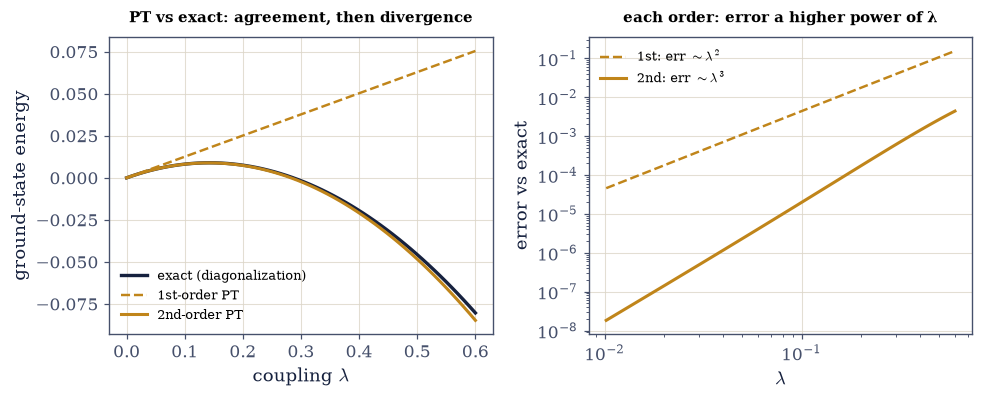
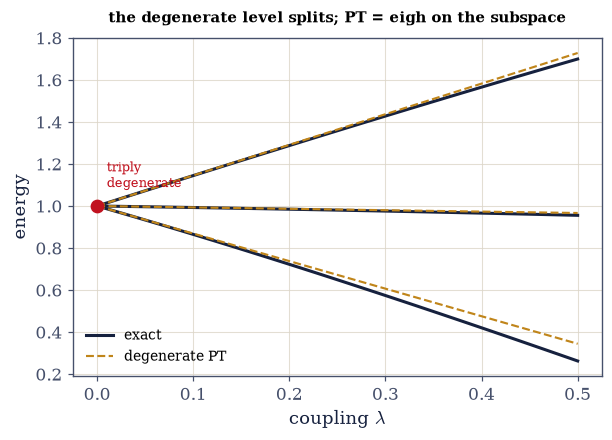
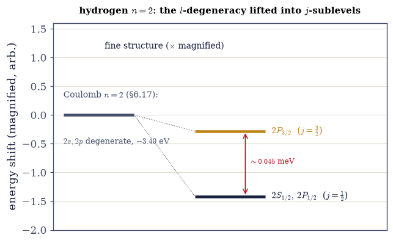

6.21 Time-Independent Perturbation Theory and Fine Structure#
Notebook overview#
Movement V confronts a fact we have been able to dodge until now: almost nothing is exactly solvable. The harmonic oscillator, the hydrogen atom, the particle in a box — these are the rare, precious exceptions, and every one of them we have already met. A real atom in a real field, two interacting electrons, a molecule — none has a closed-form solution. What saves us is that a great many hard problems are close to an easy one: \(H=H_0+\lambda V\), with \(H_0\) solved and \(\lambda V\) a small correction. Perturbation theory turns that closeness into a systematic expansion in powers of \(\lambda\), and it is the workhorse approximation of all of physics.
The formulas are famous and simple. The first-order energy shift is just the average of the
perturbation in the unperturbed state, \(E_n^{(1)}=\langle n^0|V|n^0\rangle\). The second-order shift is a
sum over virtual transitions, \(E_n^{(2)}=\sum_{m\ne n}|\langle m^0|V|n^0\rangle|^2/(E_n^0-E_m^0)\),
whose energy denominators are the whole story: when two unperturbed levels crowd together, a term blows
up and the expansion fails. That failure is not a bug — it is the theory telling us that the unperturbed
states were the wrong ones, and that we must first find the good states by diagonalizing \(V\) within
the degenerate subspace. Degenerate perturbation theory, notoriously murky in algebra courses, is
transparent on a computer: it is simply numpy.linalg.eigh on the perturbation restricted to the
degenerate block, the “secular equation” made concrete (the eigenspace-projection idea of §6.5).
Throughout, we do the one thing a pencil-and-paper derivation cannot: check every prediction against
exact diagonalization. For any finite model we build the full \(H_0+\lambda V\), diagonalize it with
numpy.linalg.eigvalsh, and watch the perturbation series agree beautifully at small \(\lambda\), then
peel away as \(\lambda\) grows — so the domain of validity is something we see rather than take on faith.
Then comes the physics, and it is a promise three notebooks in the making. The perfect \(l\)-degeneracy of the hydrogen atom (§6.17) — every orbital of a shell at one energy — is an artifact of the exact \(1/r\) potential and its hidden symmetry. Relativity breaks it. Three small corrections, all of order \(\alpha^2\) (the fine-structure constant squared, \(\approx5\times10^{-5}\)) — the relativistic kinetic correction, the spin–orbit coupling \(\mathbf L\cdot\mathbf S\) (posed in §6.18, evaluated in §6.19), and the Darwin term — split the degenerate levels, and their sum depends only on \(n\) and \(j\). The \(l\)-degeneracy is lifted: this is the fine structure of the hydrogen spectrum, the sodium D-line doublet, the splitting of the Balmer lines.
As in every Volume VI notebook, each exercise opens with a short setup and an enumerated list of parts,
each naming the exact operation to reach for — the perturbation formulas coded explicitly,
numpy.linalg.eigvalsh (exact benchmark) and numpy.linalg.eigh (degenerate-subspace diagonalization),
the matrix elements \(\langle m|V|n\rangle\) via numpy.vdot, and the \(\mathbf L\cdot\mathbf S\) operator
from §6.19.
Conventions. \(\lambda\) is the dimensionless expansion parameter. For the fine structure we use atomic-scale energies in eV with the Rydberg \(\text{Ry}=13.606\,\)eV and \(\alpha=1/137.036\). The method — perturbation theory, checked against exact — is the backbone of this notebook; fine structure is its flagship application. We foreground the method and the qualitative result (the \(l\)-degeneracy lifted, levels split by \(j\)) over grinding the \(\langle1/r^3\rangle\) integrals — those results are quoted, their algebra summarized. See Sakurai & Napolitano and Griffiths (time-independent and degenerate PT, hydrogen fine structure); and Notebooks §6.5 (eigenspace projection — the good basis), §6.17 (the \(l\)-degeneracy now lifted), §6.18 (spin–orbit posed), §6.19 (\(\mathbf L\cdot\mathbf S\) evaluated), §6.6 (compatible observables).
Theory in brief#
The setup and the first-order shift#
Write \(H=H_0+\lambda V\) with \(H_0\) solved (states \(|n^0\rangle\), energies \(E_n^0\)) and expand \(E_n=E_n^0+\lambda E_n^{(1)}+\lambda^2 E_n^{(2)}+\cdots\). The first-order energy is
the average of the perturbation — the single most-used result in physics.
Second order and level repulsion#
The state mixes in others, and the second-order energy is a sum over virtual transitions,
with the energy denominators \(E_n^0-E_m^0\) as the crux. For the ground state every denominator is negative, so \(E_0^{(2)}<0\): levels repel. When two unperturbed levels are close, a denominator is tiny and the term explodes — the signal that perturbation theory is breaking down.
Validity, checked against exact diagonalization#
When does the expansion deserve trust? Each term of Eq. 500 compares a matrix element of the perturbation to an unperturbed level spacing, and the series behaves only while every such ratio stays small:
an asymptotic condition we can test: build \(H_0+\lambda V\), diagonalize it exactly
(numpy.linalg.eigvalsh), and compare — agreement at small \(\lambda\), error growing like \(\lambda^3\),
breakdown as \(\lambda V\) approaches the level spacing.
Degenerate perturbation theory#
When \(E_n^0\) is shared by several states, the machinery above stalls: Eq. 500 divides by level spacings that are now exactly zero. The repair is standard (Griffiths and Sakurai & Napolitano both develop it in full) and fits on one line:
the zero denominators mean the unperturbed states are not unique; the resolution is to diagonalize \(V\)
within the degenerate subspace. Its eigenvalues are the first-order splittings (the degeneracy is
lifted), its eigenvectors the good states (the correct zeroth-order basis — the one that diagonalizes
\(V\), §6.5, §6.6). The “secular equation” is just a small eigh.
Hydrogen fine structure#
Three relativistic corrections, all of order \(\alpha^2\), split the Coulomb levels of §6.17: the relativistic kinetic correction (the electron moves at \(\sim\alpha c\), so \(p^2/2m\) understates the kinetic energy), the spin–orbit coupling \(\propto\mathbf L\cdot\mathbf S\) (§6.18/§6.19), and the Darwin term (an \(l=0\)-only smearing). Their sum depends only on \(n\) and \(j\),
so the perfect \(l\)-degeneracy of §6.17 is lifted (states of the same \(n\) now split by \(j\)), while a residual \(j\)-degeneracy remains (lifted further by the Lamb shift, QED — a horizon). The scale is \(\alpha^2\text{Ry}\sim10^{-4}\,\)eV, tiny against \(13.6\,\)eV — exactly why perturbation theory is justified.
Setup#
import matplotlib.pyplot as plt
import numpy as np
from ecp import draw, validate
ACCENT, INK, SOFT = draw.ACCENT, draw.INK, draw.SOFT
RED, BLUE = "#c1121f", "#1d4e89"
RY = 13.605693 # the Rydberg energy in eV
ALPHA = 1 / 137.035999 # the fine-structure constant
def angular_momentum_matrices(j):
"""The angular-momentum matrices Jx, Jy, Jz for a given j (reused from §6.14/§6.19)."""
dim = int(round(2 * j + 1))
m = np.arange(j, -j - 1, -1.0)
Jz = np.diag(m).astype(complex)
Jp = np.zeros((dim, dim), dtype=complex)
Jm = np.zeros((dim, dim), dtype=complex)
for a in range(dim):
ma = m[a]
cp = j * (j + 1) - ma * (ma + 1)
if cp > 1e-12:
Jp[a - 1, a] = np.sqrt(cp)
cm = j * (j + 1) - ma * (ma - 1)
if cm > 1e-12:
Jm[a + 1, a] = np.sqrt(cm)
return (Jp + Jm) / 2, (Jp - Jm) / 2j, Jz
def spin_orbit_operator(l, s=0.5):
"""The spin–orbit operator L·S on the l ⊗ s product space (reused from §6.19)."""
Lx, Ly, Lz = angular_momentum_matrices(l)
Sx, Sy, Sz = angular_momentum_matrices(s)
return np.kron(Lx, Sx) + np.kron(Ly, Sy) + np.kron(Lz, Sz)
def matrix_element(V, bra, ket):
"""The matrix element ⟨bra|V|ket⟩, computed with numpy.vdot so the bra is conjugated."""
return np.vdot(bra, V @ ket)
def pt_first_order(V, n, states):
"""The first-order energy shift E_n^(1) = ⟨n0|V|n0⟩, the average of the perturbation.
The columns of ``states`` are the unperturbed eigenstates |n0⟩; pass the identity
when H0 is already diagonal.
"""
return matrix_element(V, states[:, n], states[:, n]).real
def pt_second_order(V, n, E0, states):
"""The second-order energy shift E_n^(2) = Σ_{m≠n} |⟨m0|V|n0⟩|^2 / (E_n^0 − E_m^0).
The sum over virtual transitions. Every denominator E_n^0 − E_m^0 must be nonzero:
this is the non-degenerate formula, and degenerate levels need degenerate_pt.
"""
total = 0.0
for m in range(len(E0)):
if m != n:
total += abs(matrix_element(V, states[:, m], states[:, n])) ** 2 / (
E0[n] - E0[m]
)
return total
def degenerate_pt(V, subspace_indices, states=None):
"""Degenerate perturbation theory: diagonalize V within the degenerate subspace.
Restricts V to the states listed in ``subspace_indices`` (columns of ``states``, or
the standard basis when ``states`` is None) and diagonalizes the block with
numpy.linalg.eigh. Returns the first-order splittings (the eigenvalues) and the good
states (the eigenvectors — the correct zeroth-order basis).
"""
if states is None:
block = V[np.ix_(subspace_indices, subspace_indices)]
else:
S = states[:, subspace_indices]
block = S.conj().T @ V @ S
splittings, good = np.linalg.eigh(block)
return splittings, good
def fine_structure_energy(n, j):
"""The hydrogen fine-structure energy in eV: E_nj = −(Ry/n^2)·[1 + (α^2/n^2)(n/(j+1/2) − 3/4)].
Depends only on n and j — the l-degeneracy is lifted, and a residual j-degeneracy
remains (broken only by the Lamb shift).
"""
return -(RY / n**2) * (1 + (ALPHA**2 / n**2) * (n / (j + 0.5) - 0.75))
Exercise 1 — First-order perturbation theory, checked against exact#
The leading correction to an energy level is the average of the perturbation in the unperturbed state — the single most-used formula in physics Eq. 499. We verify it the honest way, against an exact answer.
Build a diagonal \(H_0\) (the unperturbed energies) and a symmetric random perturbation \(V\).
Compute the first-order shift \(E_0^{(1)}=\langle 0|V|0\rangle\) for the ground state, using the
pt_first_orderhelper (anumpy.vdotmatrix element).Diagonalize \(H_0+\lambda V\) exactly with
numpy.linalg.eigvalshat a small coupling \(\lambda\).Confirm the prediction \(E_0^0+\lambda\langle 0|V|0\rangle\) matches the exact ground-state energy.
first-order perturbation theory (ground state, λ=0.05):
⟨0|V|0⟩ = 0.1257 → E₀ ≈ E₀⁰ + λ⟨0|V|0⟩ = 0.006287
exact diagonalization: E₀ = 0.005176
first-order error = 1.11e-03 — an O(λ²) residual, second order's job
Validation 1#
✓ the first-order shift ⟨n|V|n⟩ matches exact diagonalization at small λ [got 0.00628651 vs expected 0.00517645 (rtol=1e-06)]
True
Exercise 2 — Second-order perturbation theory and level repulsion#
We refine the energy estimate to second order and watch the characteristic “repulsion” of neighbouring levels emerge Eq. 500.
Compute the second-order shift \(E_n^{(2)}=\sum_{m\ne n}|\langle m|V|n\rangle|^2/(E_n^0-E_m^0)\) with the
pt_second_orderhelper (matrix elements vianumpy.vdot).Add it to the first-order result and compare both orders against exact diagonalization (
numpy.linalg.eigvalsh) across a range of couplings \(\lambda\).Confirm the ground-state second-order shift is negative — every denominator \(E_0^0-E_m^0\) is — and interpret it as level repulsion.
second-order shift of the ground state: E₀⁽²⁾ = -0.4450 (< 0: levels repel)
PT vs exact across λ (ground state):
λ exact 1st-order (err) 2nd-order (err)
0.02 0.002337 0.002515 (1.8e-04) 0.002337 (1.4e-07)
0.05 0.005176 0.006287 (1.1e-03) 0.005174 (2.3e-06)
0.10 0.008143 0.012573 (4.4e-03) 0.008123 (2.0e-05)
0.20 0.007521 0.025146 (1.8e-02) 0.007348 (1.7e-04)
Validation 2#
✓ second-order PT improves the agreement over first order, and the ground state is pushed down (level repulsion)
True
findfont: Failed to find font weight 600, now using 700.

Fig. 480 Perturbation theory, watched holding and failing. The ground-state energy of \(H_0+\lambda V\) as the coupling \(\lambda\) grows: the exact result from diagonalization (ink) against the first-order (dashed amber) and second-order (solid amber) perturbation series. At small \(\lambda\) all three coincide — the series is doing its job. As \(\lambda\) grows, first order (a straight line, the average of \(V\)) peels away first; second order, which curves downward with the level repulsion, follows the exact curve much further before it too departs. The error of the \(k\)-th order grows like \(\lambda^{k+1}\), so each order buys a wider window of validity, but none is exact away from \(\lambda=0\). This is the honesty a computer adds to perturbation theory: rather than trusting the expansion, we see precisely where ‘small correction’ stops being small — the inset shows the errors growing as powers of \(\lambda\).#
Exercise 3 — Where perturbation theory breaks#
Perturbation theory carries its own failure signal — the energy denominators. Here we close the gap between two levels and watch the second-order term blow up Eq. 501, Eq. 500.
Build two nearly-degenerate levels, \(E_0^0=0\) and \(E_1^0=\delta\) with \(\delta\) small, coupled by an off-diagonal \(V_{01}\).
Compute the second-order shift \(|V_{01}|^2/(E_0^0-E_1^0)\) and note it grows as \(1/\delta\).
Compare against the exact ground state (
numpy.linalg.eigvalsh) as \(\delta\) shrinks, and show the overshoot growing.Conclude that non-degenerate perturbation theory is invalid when levels approach — the cue for the degenerate treatment of Exercise 4.
two nearly-degenerate levels with a coupling — PT overshoots as the gap closes:
gap δ exact E₀ 2nd-order PT overshoot
1.00 -0.00090 -0.00090 0.0000
0.30 -0.00297 -0.00300 0.0000
0.10 -0.00831 -0.00900 0.0007
0.03 -0.01854 -0.03000 0.0115
Validation 3#
✓ the second-order shift overshoots the exact result for nearly-degenerate levels — PT fails when unperturbed levels are close (small denominators)
True
Exercise 4 — Degenerate perturbation theory as subspace diagonalization#
When the unperturbed level is degenerate the denominators vanish identically, and the fix is the most
notorious piece of algebra in a quantum course — which on a computer is three lines: the “secular
equation” is an eigh on a block, and the good basis is the one that diagonalizes \(V\) (§6.5)
Eq. 502.
Build an \(H_0\) with a triply-degenerate level and a random Hermitian perturbation \(W\).
Restrict \(W\) to the degenerate subspace and diagonalize the block with
numpy.linalg.eigh(thedegenerate_pthelper): the eigenvalues are the first-order splittings, the eigenvectors the good states.Confirm the split levels \(E^0+\lambda\times(\text{splittings})\) match exact diagonalization of the full \(H\) (
numpy.linalg.eigvalsh).
degenerate perturbation theory = eigh of V restricted to the degenerate subspace:
first-order splittings (eigenvalues of V|subspace): [-1.3109 -0.0664 1.4561]
degenerate-PT levels: [0.97378 0.99867 1.02912]
exact lowest three: [0.97361 0.99865 1.02909]
max error = 1.67e-04
the degeneracy is LIFTED; the eigenvectors are the 'good' zeroth-order states (§6.5)
Validation 4#
✓ degenerate PT is diagonalization of the perturbation within the degenerate subspace — matching exact to 1e-3 [max|Δ| = 0.000166755 (rtol=1e-06, atol=0.001)]
True

Fig. 481 A degenerate level splitting. A triply-degenerate unperturbed level (left, at \(E=1\)) as the perturbation is turned on (\(\lambda\) increasing to the right): the three exact eigenvalues (ink) fan out, and the degenerate-perturbation-theory prediction — \(E^0+\lambda\times\)(the eigenvalues of \(V\) restricted to the degenerate subspace) — tracks them (dashed amber) straight out of the degeneracy. This is the whole content of degenerate perturbation theory, which reads as forbidding algebra in a textbook: the ‘secular equation’ is nothing but numpy.linalg.eigh on the \(3\times3\) block of \(V\) within the degenerate subspace, and its eigenvectors are the ‘good’ states — the unique zeroth-order basis in which the perturbation is diagonal (the eigenspace projection of §6.5). Once the level has split, the pieces are non-degenerate and ordinary perturbation theory takes over. Hydrogen’s fine structure is exactly this problem, on the massively degenerate Coulomb levels.#
Exercise 5 — Hydrogen fine structure: the spin–orbit splitting#
The spin–orbit coupling \(H_{SO}\propto\mathbf L\cdot\mathbf S\) is the most famous ingredient of the fine structure, and it is a degenerate-perturbation problem whose good basis we already own: the coupled \(|j,m\rangle\) basis of §6.19, in which \(\mathbf L\cdot\mathbf S\) is diagonal Eq. 503.
Recall that in the coupled basis \(\mathbf L\cdot\mathbf S\) has eigenvalue \(\tfrac12[j(j+1)-l(l+1)-s(s+1)]\).
Build \(\mathbf L\cdot\mathbf S\) for \(l=1\), \(s=\tfrac12\) with the
spin_orbit_operatorhelper (§6.19) and read off its distinct eigenvalues withnumpy.linalg.eigvalsh.Show \(j=\tfrac32\) is raised and \(j=\tfrac12\) lowered, and match the operator’s eigenvalues to the formula.
Identify the pattern as the sodium-D-type doublet.
spin–orbit L·S for l=1 (the good/coupled basis, 6.19):
j=1.5 (2j+1=4): ⟨L·S⟩ = +0.500 (raised; multiplicity 4)
j=0.5 (2j+1=2): ⟨L·S⟩ = -1.000 (lowered; multiplicity 2)
L·S eigenvalues from the operator: [np.float64(0.5), np.float64(-1.0)] (match the formula)
trace check: tr(L·S) = +0.0e+00 (traceless, as required)
this doublet is the sodium D-line structure; spin–orbit lifts the degeneracy by j
Validation 5#
✓ the spin–orbit coupling splits levels by j (j=l+½ raised, j=l−½ lowered) with eigenvalue ½[j(j+1)−l(l+1)−¾] [max|Δ| = 0 (rtol=1e-09, atol=1e-09)]
True
Exercise 6 — The full fine-structure formula and the lifted degeneracy#
Three relativistic corrections, all of order \(\alpha^2\), combine into one closed formula — and the punchline is which quantum numbers survive in it. The perfect Coulomb degeneracy of §6.17 is about to be lifted by relativity Eq. 503.
State the three \(\alpha^2\) corrections (relativistic kinetic, spin–orbit, Darwin); their sum is \(E_{n,j}=-(\text{Ry}/n^2)[1+(\alpha^2/n^2)(n/(j+\tfrac12)-\tfrac34)]\), coded in the
fine_structure_energyhelper.Evaluate the \(n=2\) states: \(2S_{1/2}\), \(2P_{1/2}\), \(2P_{3/2}\).
Show \(2S_{1/2}\) and \(2P_{1/2}\) (same \(j=\tfrac12\), different \(l\)) coincide while \(2P_{3/2}\) splits off — the energy depends on \(j\), not \(l\): the \(l\)-degeneracy is lifted.
Compute the \(2P_{3/2}-2P_{1/2}\) splitting (\(\sim\alpha^2\text{Ry}\sim0.05\,\)meV) and note that its smallness is precisely what justifies perturbation theory.
hydrogen n=2 fine structure Eₙⱼ = −(Ry/n²)[1 + (α²/n²)(n/(j+½) − ¾)]:
2S₁/₂ (l=0,j=½): E = -3.401480 eV
2P₁/₂ (l=1,j=½): E = -3.401480 eV
2P₃/₂ (l=1,j=³⁄₂): E = -3.401435 eV
2S₁/₂ and 2P₁/₂ (same j=½) COINCIDE — energy depends on j, not l: the l-degeneracy is LIFTED by j
2P₃/₂ − 2P₁/₂ splitting = 0.0453 meV (scale α²Ry = 0.725 meV)
tiny against 13.6 eV — which is exactly why perturbation theory is justified
(a residual j=½ degeneracy remains, lifted by the Lamb shift — QED, a horizon)
Validation 6#
✓ the fine-structure energy depends only on n and j; the l-degeneracy of §6.17 is lifted (2P₃/₂−2P₁/₂ ≈ 0.045 meV) [got 0.0452826 vs expected 0.0453 (rtol=1e-06)]
True
findfont: Failed to find font weight 600, now using 700.

Fig. 482 Hydrogen’s fine structure: the \(l\)-degeneracy lifted. The \(n=2\) level of hydrogen, hugely magnified. In the exact Coulomb problem of §6.17 (left) it is a single level at \(-3.40\,\)eV, holding the \(2s\) and \(2p\) orbitals at precisely the same energy — the \(l\)-degeneracy protected by the \(1/r\) potential’s hidden symmetry. Relativity breaks that symmetry: the three \(\alpha^2\) corrections (relativistic-kinetic, spin–orbit, Darwin) split the level (right, magnified \(\sim2.5\times10^4\times\)) into fine-structure sublevels labelled by the total angular momentum \(j\). The energy now depends only on \(n\) and \(j\), so \(2S_{1/2}\) and \(2P_{1/2}\) — same \(j=\tfrac12\), different \(l\) — remain degenerate, while \(2P_{3/2}\) (\(j=\tfrac32\)) lifts above them by \(\sim0.045\,\)meV. This tiny splitting is the fine structure of the Balmer lines and the archetype of the sodium D-line doublet; the residual \(2S_{1/2}\)–\(2P_{1/2}\) degeneracy is broken only by the Lamb shift of quantum electrodynamics.#
Exercise 7 — Perturbing the harmonic oscillator (student)#
The general method, turned on a familiar system: the anharmonic oscillator (§6.12), whose \(\lambda x^4\) correction admits no closed-form spectrum Eq. 499, Eq. 501.
Take the oscillator as \(H_0\) in the number basis (\(E_n=n+\tfrac12\) with \(\hbar=\omega=1\)).
Build \(x=(a+a^\dagger)/\sqrt2\) from the ladder operators and form the perturbation \(x^4\) with
numpy.linalg.matrix_power.Compute the first-order ground-state shift \(\lambda\langle0|x^4|0\rangle\).
Compare against exact diagonalization of \(H_0+\lambda x^4\) (
numpy.linalg.eigvalsh) across \(\lambda\) and identify where perturbation theory breaks down.
anharmonic oscillator H = H₀ + λx⁴, ⟨0|x⁴|0⟩ = 0.750:
λ exact E₀ 1st-order PT (err)
0.01 0.50726 0.50750 (2.4e-04)
0.05 0.53264 0.53750 (4.9e-03)
0.10 0.55915 0.57500 (1.6e-02)
0.30 0.63799 0.72500 (8.7e-02)
error at λ=0.01: 2.4e-04 error at λ=0.3: 8.7e-02 (grows with λ)
Validation 7#
✓ perturbation theory matches exact at small λ and diverges as λ grows for the λx⁴ anharmonic oscillator — its accuracy and breakdown, mapped
True
Exercise 8 — Approximation with a conscience#
Almost nothing in physics is exactly solvable, and perturbation theory is how we make progress anyway —
by expanding around what we can solve and keeping the small terms. The formulas are simple: the average
of the perturbation, then a sum over virtual transitions. But their honesty lives in the denominators:
when two levels crowd together the expansion fails, and we must first find the good states by
diagonalizing \(V\) within the degenerate subspace — degenerate perturbation theory, which on a computer is
just a small eigh.
This exercise (synthesis). No new computation: the method, and its honesty, are the result. We did what no derivation can — watched the approximation agree with the exact answer and then part from it — and then turned it on the real prize: the fine structure that splits hydrogen’s degenerate levels by a few parts in a hundred thousand, lifting the \(l\)-degeneracy the Coulomb symmetry had protected (§6.17), through the spin–orbit coupling we posed in §6.18 and evaluated in §6.19. Movement V has begun. The next notebook (§6.22) turns to a different and often more powerful approximation — the variational method, which bounds the ground-state energy of systems too far from any solvable one for perturbation theory to reach, like the helium atom — and then the semiclassical WKB limit (§6.23) and time-dependent transitions (§6.24) complete the toolkit.
A good approximation knows its own limits. The virtue of doing perturbation theory on a computer is not that the computer does the algebra — it is that you can always ask the exact answer how well you did, and watch the honest place where “small correction” stops being small.
Notebook summary#
Perturbation theory, checked against exact — and hydrogen’s fine structure. The opening of Movement V.
First order Eq. 499: \(E_n^{(1)}=\langle n|V|n\rangle\), the average of the perturbation (
numpy.vdot).Second order Eq. 500: \(E_n^{(2)}=\sum_{m\ne n}|\langle m|V|n\rangle|^2/(E_n^0-E_m^0)\) — virtual transitions, level repulsion (\(E_0^{(2)}<0\)), and the energy denominators that decide validity.
Checked against exact Eq. 501:
numpy.linalg.eigvalshon \(H_0+\lambda V\) — agreement at small \(\lambda\), error \(\sim\lambda^{k+1}\), breakdown when levels are close.Degenerate PT Eq. 502:
numpy.linalg.eighon \(V\) within the degenerate subspace — the splittings and the good states (the “secular equation,” §6.5), matching exact to \(10^{-3}\).Fine structure Eq. 503: three \(\alpha^2\) corrections give \(E_{n,j}=-(\text{Ry}/n^2) [1+(\alpha^2/n^2)(n/(j+\tfrac12)-\tfrac34)]\) — the \(l\)-degeneracy of §6.17 lifted, split by \(j\) (\(2P_{3/2}\) above \(2P_{1/2}\) by \(\sim0.045\,\)meV), answering §6.18/§6.19.
We watched the approximation hold and fail against the exact answer, and used it to break hydrogen’s perfect degeneracy. Movement V is under way.
Outlook#
The variational method (§6.22): bounding ground-state energies from above, and the helium atom / a glimpse of variational Monte Carlo.
The WKB / semiclassical approximation (§6.23): and its connection to the Hamilton–Jacobi theory of Volume II (§2.10).
Time-dependent perturbation theory and Fermi’s golden rule (§6.24): transitions, selection rules, and spectra.
The Lamb shift and QED corrections beyond fine structure; hyperfine structure (horizons).
Cross-reference §6.5 (eigenspace projection / the good basis), §6.17 (the \(l\)-degeneracy), §6.18/§6.19 (spin–orbit, \(\mathbf L\cdot\mathbf S\)), §6.6 (compatible observables), and forward to §6.22, §6.23, §6.24.